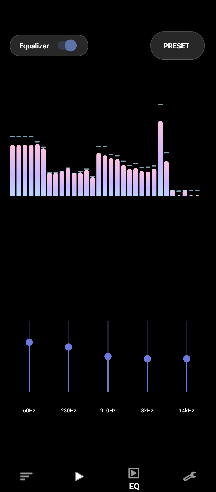
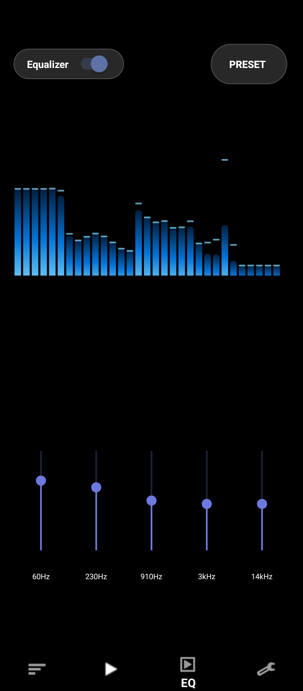
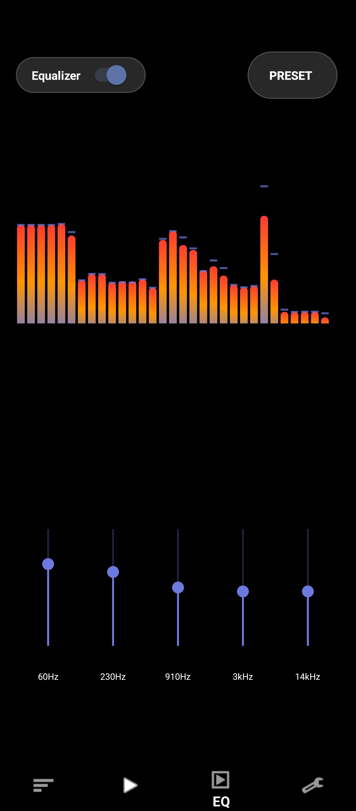

STM-PLAYER reproduce tu biblioteca local sin depender de internet, sin anuncios y sin rastreo. Descarga el APK, instálalo y listo.
Android 8.0+ · No requiere Google Play · Instalación manual (APK)
Reproduce tu biblioteca local. Cero conexión requerida.
Nada de interrupciones ni suscripciones.
Pensada para no consumir batería ni almacenamiento de más.
Organiza playlists y carpetas como tú quieras.
Ajusta 60Hz a 14kHz, con varios temas de color.



Aquí irá quedando cada versión y sus cambios, desde el principio.